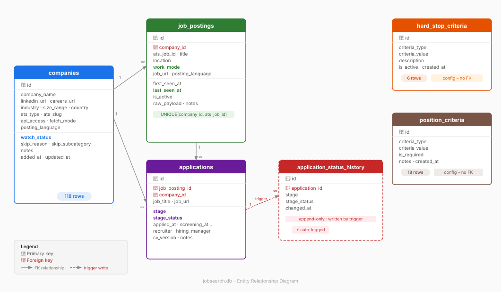

In Part 1, I described the framework I use to run a structured job search: five lists — companies to watch, companies to skip, hard stops, fit criteria, and position criteria — updated on a weekly cycle. The problem was clear: manually maintaining those lists in Markdown files and spreadsheets doesn't scale past a few dozen companies. Checking career pages by hand, copy-pasting job titles, tracking application stages in a color-coded table — all of it becomes noise that competes with the actual work of applying.
So I decided to build a proper database. Not to over-engineer a personal project, but because the structure of the problem maps almost perfectly to a relational model — and once that model exists, automation becomes straightforward. This article shows exactly how I translated the five-list framework into a working SQLite schema, and the design decisions I made along the way.
The ER Diagram
Before going into detail, here is the full structure at a glance:

From Theory to Tables: Mapping the Five Lists
The framework from Part 1 defined five conceptual lists. Here is how each one translates into the database:
Company_fit_criteria_list doesn't become a standalone table. Instead, the criteria live in hard_stop_criteria and position_criteria, and the verdict of applying those criteria to each company is stored as watch_status and skip_reason on the companies table. There's no point duplicating the criteria and the result — one source of truth is enough.
Companies_to_watch_list maps to companies where watch_status = 'watch'. These are the 54 English/Mixed companies the scraper actively monitors. Changing a company's status from skip back to watch is a single UPDATE — no manual list reshuffling.
Companies_to_skip_list maps to companies where watch_status = 'skip' or 'not_relevant'. I decided to merge the watch and skip lists into one companies table with a status field rather than maintaining two separate lists. This avoids duplication and makes it trivial to move a company between states as things change.
Hard_stop_list maps directly to the hard_stop_criteria table — absolute disqualifiers applied automatically without manual review: German-only language, media industry, companies under 50 people, title keywords like "internship" or "Werkstudent".
Position_description_list maps to the position_criteria table — title keywords, seniority levels, locations, work modes, and language requirements that define what counts as a relevant role.
The framework also implied a sixth concept: an active application pipeline, described as a manual weekly process. I made it explicit as the applications table — the natural continuation of the funnel once a role is identified.
The Tables in Detail
Operational Tables
companies is the master record of every company I've ever looked at. Beyond the basic profile (name, LinkedIn, careers page, industry, size), it holds the technical scraping metadata: which ATS the company uses, the ATS slug needed to call their API, whether the API is publicly accessible, and whether the scraper handles them automatically or I check manually. The watch_status field does the heavy lifting — it replaces the section headers I used in the old Markdown tracker and drives the scraper's target list.
job_postings is the scraper's output — one row per open role found at a company. The key mechanic is last_seen_at: every time the scraper runs and finds a job still live, it updates this timestamp. If a posting disappears, the timestamp goes stale — no webhook from the ATS needed, the absence of an update is the signal. I also store the full raw JSON from the ATS API in raw_payload. This is the data lake pattern: capture everything now, parse what you need later. It's never cost you anything to store it, and it's frequently cost you something not to.
The relevance_score field deserves its own explanation. When the scraper evaluates a posting, it checks it against every row in position_criteria and counts how many match: title keyword hit (+1), seniority level hit (+1), location hit (+1), work mode hit (+1), and so on. The total count is the relevance score. It's the same keyword-matching logic ATS systems use to rank CVs — applied in reverse. A job needs at least score 1 to enter job_postings at all. During my weekly review, I sort by score descending and start from the top. No weights, no thresholds, no model — just a row count.
cv_versions tracks my CV through a three-level hierarchy: major (full rewrite — v1, v2), stream (angle-specific version — v2_performance, v2_growth), and fit (tailored for one specific application). Only the fit level is linked from applications. Fit-level files follow a strict naming convention: {company}_{position}_{YYYYMMDD}_cv.pdf. These are immutable archived copies — not working documents. When a recruiter calls three weeks later, I open the file, and I know exactly what they read.
cover_letters follows the same structure with two levels: template (one per stream) and fit (one per application, named {company}_{position}_{YYYYMMDD}_cl.pdf). Linked from applications alongside the CV.
applications is my personal pipeline, completely separate from the scraper. One row per role I decide to pursue. It tracks progression through stages: manually_reviewed → applied → screening → test_task → team_interview → hm_interview → higherups_interview → offer, each with a stage_status (pending, invited, passed, failed, ghosted, accepted, declined). It also records key dates, recruiter and hiring manager names, and foreign keys to the exact CV and cover letter that were sent.
application_status_history is an append-only log of every stage or status change in applications. I never write to it manually — a database trigger fires automatically on every UPDATE and inserts a row with the new stage, new status, and a timestamp. At 200–500 applications this data becomes statistically meaningful: screening-to-interview conversion rate, average days from applying to first response, which ATS platforms or industries tend to ghost. It's the kind of analysis that makes the next job search faster even if it doesn't help the current one.
Config Tables
hard_stop_criteria and position_criteria are small, mostly static tables that encode my rules as data rather than code. Adding a new disqualifier means inserting a row, not editing a script. The scraper reads these tables on every run, so rule changes take effect immediately on the next cycle — currently 6 hard stop rules and 18 position criteria.
The Logic Flow
The full pipeline in one sentence: the scraper reads companies where watch_status = 'watch', fetches postings from each company's ATS, checks each posting against hard_stop_criteria (block) and position_criteria (score), writes anything that scores ≥ 1 into job_postings, and I review from there — moving anything worth pursuing into applications and tracking it through to completion.
Why SQLite and Not Google Sheets or CSV
I want to be direct about this decision because "just use a spreadsheet" is the obvious objection.
Query power. With SQLite I can ask: "show me all English-language remote roles at companies over 200 people that appeared in the last 7 days and I haven't reviewed yet" — in a single statement. In Google Sheets that requires multiple filter columns, manual sorting, and breaks as the dataset grows. CSV has no query capability at all.
Pipeline integrity. The applications table has foreign keys to job_postings, companies, cv_versions, and cover_letters. A posting can't be linked to a company that doesn't exist. An application can't reference a CV that was never tracked. Sheets and CSV have no referential integrity — a typo in a company name silently creates a duplicate.
Automation. The scraper writes to job_postings using an upsert: ON CONFLICT(company_id, ats_job_id) DO UPDATE SET last_seen_at = CURRENT_TIMESTAMP. Every run deduplicates automatically. Doing this reliably in Google Sheets requires Apps Script, race conditions, and ongoing maintenance. CSV requires reading the whole file, deduplicating in memory, and rewriting it on every run.
Why not Postgres? Because this is a single-user local tool. SQLite is a single file. No server, no credentials, no infrastructure. It handles millions of rows comfortably — far more than this pipeline will generate. The file lives next to the scripts, opens in DB Browser for SQLite for visual inspection, and backs up with a file copy. A server database would add real complexity for zero practical benefit at this scale.
Visualisation
The database stores data — it doesn't display it. I use three layers depending on what I need.
DB Browser for SQLite is the daily tool. Free desktop app, opens jobsearch.db directly, provides spreadsheet-like table views and a SQL editor for ad-hoc queries. Fast, no setup.
CSV export for one-offs. Any query result exports to CSV in one click and opens in Excel. Useful for sharing a snapshot, but it goes stale immediately — not suitable for ongoing tracking.
HTML dashboard is what I'm building next: a self-contained page that reads from the database each time it's opened and shows the full picture — pipeline funnel by stage, new postings this week sorted by relevance score, applications overdue for a follow-up, and postings that have gone stale (likely closed). It runs entirely locally, no external service required.
Closing Thoughts
The whole schema took a few hours to design and maybe a day to build the migration tooling. What it buys back is hard to quantify precisely, but the rough estimate is this: at 300 applications over a three-month search, manually checking 54+ career pages weekly, tracking statuses in a spreadsheet, and hunting for the right CV version at interview time would easily consume 3–4 hours per week of pure overhead. The database eliminates most of that — the scraper handles sourcing, the relevance score handles prioritization, and the naming convention handles document retrieval.
The thing I find most useful in retrospect is the application_status_history table. It turns the job search — which normally feels like a black box where things happen to you — into a measurable funnel where you can see exactly where things break down. That shift from passive to analytical changes how the whole process feels.
If you're running a serious job search and tracking it in a spreadsheet, I'd genuinely recommend investing a weekend in a setup like this. If you've built something similar — or have a better approach to any of the pieces — I'd be curious to hear about it on LinkedIn.